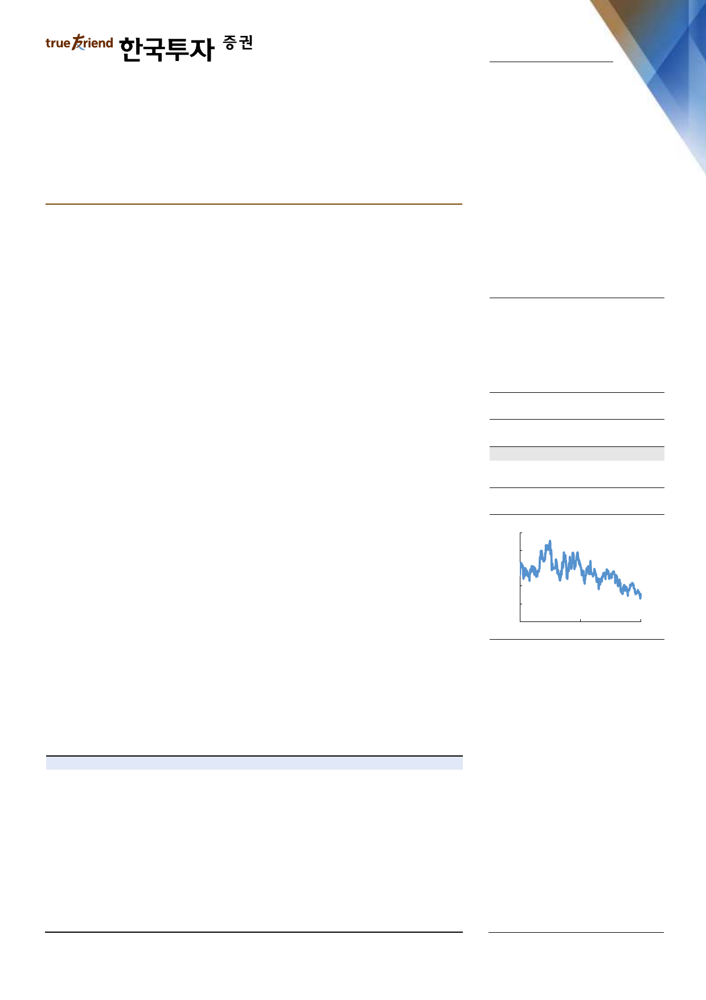

기업 Brief
2019. 3. 18
팬오션(028670)
동 트기 전에 사야하는 주식
매수(유지)
목표주가: 7,000원(유지)
벌크해운 시황 회복될 전망이라는 점에 변함 없음
- 1분기 현재까지 BDI 평균은 826p로 전년동기대비 26% 낮은 수준. 미중 무역
갈등이 예상보다 장기화되는 가운데 1월 발레의 브라질 댐 붕괴 사고 여파로
시황이 크게 부진하기 때문
- 불확실성 여전히 높지만 수요 악재는 구조적으로 이어지는 문제가 아니라고 판
단됨. 중국의 벌크화물 수요가 늘어나는 그림에는 변함 없음
- 반면 내년 시행되는 IMO 2020 환경규제 강화를 앞두고 하반기부터는 공급 단
의 제약이 커질 전망. 스크러버 설치 등을 위해 물리적인 가동일수 감소하고 환
경관련 비용 증가로 노후선박들에 대한 폐선이 늘어나기 때문
- 해운 리서치기관인 Clarksons은 올해 벌크선 폐선량을 760만dwt로 전망하고
있지만 보수적이라 판단. 작년 440만dwt보다는 늘어나지만 여전히 2~3년 전
에 비해 크게 낮음. 전세계 11,400여척 선박 중 20년 이상 된 노후선박은 약
1,100척, 5,900만dwt(전체 선복량의 7%)에 달해 잠재된 폐선수요 많을 것
시황과 주가 모두 하방경직성 높은 지금이 팬오션 사야할 때
- 예상할 수 있는 수요 악재 모두 터진 지금이 역설적으로 시황의 바닥. 반면 시
황에 더 중요한 것은 공급인데, 환경규제 강화는 구조적인 변곡점이 될 전망
- 지난주 200p대까지 하락했던 케이프선박 운임지수가 V자 반등하면서 BDI 역
시 한달 반 만에 700p선을 회복. 작년부터 시황 불확실성이 커져 여전히 예측
하기 어려운 BDI지만, 반대로 보면 반등폭 역시 단기 예상보다 가파를 수 있음
- 악재가 해소되는 시그널까지 확인하고 투자판단을 내리기엔 늦을 수 있다는 점
에서 시황과 주가 모두 바닥인 현 시점을 편안한 저점 매수구간으로 추천
- 팬오션 실적의 하단은 이익 보장되는 장기운송계약이 막아주고 있음. 환경규제
강화에 따라 수급 변동성 커지면 안정적인 수익과 재무구조 더욱 부각될 전망
Stock Data
KOSPI(3/15)
주가(3/15)
시가총액(십억원)
발행주식수(백만)
52주 최고/최저가(원)
일평균거래대금(6개월, 백만원)
유동주식비율/외국인지분율(%)
주요주주(%) 하림지주 외 30 인
국민연금
2,176
4,245
2,269
535
5,740/4,030
6,147
45.1/9.5
54.9
5.8
주가상승률
절대주가(%)
KOSPI 대비(%p)
1개월
(0.8)
0.1
6개월
(17.6)
(11.4)
12개월
(23.0)
(10.3)
주가추이
(원)
7,000
6,200
5,400
4,600
3,800
3,000
Mar-17
자료: FnGuide
Mar-18
Mar-19
매출액(십억원)
증가율(%)
영업이익(십억원)
순이익(십억원)
EPS(원)
증가율(%)
EBITDA(십억원)
PER(x)
EV/EBITDA(x)
PBR(x)
ROE(%)
DY(%)
2016A
1,874
3.0
168
98
184
55.9
337
21.7
10.1
0.8
4.0
0.0
주: 순이익, EPS 등은 지배주주지분 기준
2017A
2,336
24.7
195
143
268
45.7
363
19.7
10.5
1.2
5.8
0.0
2018F
2,668
14.2
204
152
285
6.4
364
14.9
8.9
0.9
6.2
0.0
2019F
2,714
1.7
210
156
292
2.4
375
14.5
8.5
0.8
6.0
0.0
2020F
2,945
8.5
240
185
346
18.6
408
12.3
7.7
0.8
6.6
0.0
최고운
gowoon@truefriend.com